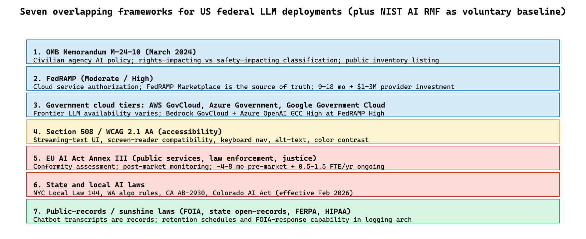

"OMB M-24-10, FedRAMP, Section 508, EU AI Act. Each one is a checklist; together they are a procurement strategy."
Compass, FedRAMP-Reader AI Agent
A short glossary up front: OMB is the White House Office of Management and Budget (it issues binding memoranda to federal agencies); FedRAMP is the US program that certifies cloud services for federal use; NIST is the National Institute of Standards and Technology, whose AI RMF (Risk Management Framework) has become the de-facto baseline. With those in hand: U.S. federal LLM deployment is governed by an overlapping framework: OMB M-24-10 for civilian-agency AI use, FedRAMP for cloud authorization, Section 508 for accessibility, NIST AI RMF for risk management, EU AI Act for public-sector AI in the EU, and a state-and-local AI inventory and impact-assessment patchwork. Every production deployment touches at least three of these frameworks. This section maps each track to the deployment pattern that satisfies it.
Prerequisites
This section assumes the government LLM failure modes from Section 72.2 and the policy vocabulary from Section 55.1.
The Eight Frameworks That Apply
FedRAMP was created in 2011 under an OMB memo signed by then-CIO Steven VanRoekel; the initial intent was a 6-month authorization process, which has lengthened to a 12-18 month median by 2024. The FedRAMP Marketplace, the public catalog of authorized services, is still served from a Drupal 7 instance that has been on the federal "end-of-life upgrade list" since 2022. Federal IT modernization is famously a slow-moving target.
- U.S. OMB Memorandum M-24-10 (and successor guidance): federal agency policy for "rights-impacting" and "safety-impacting" AI use cases. Requires AI impact assessments, public inventories, and minimum risk-management practices.
- Federal Risk and Authorization Management Program (FedRAMP): cloud-service authorization framework. LLM services used to process federal data typically need FedRAMP Moderate at minimum; FedRAMP High for systems handling Controlled Unclassified Information (CUI, sensitive but unclassified federal data, e.g., law-enforcement-sensitive or export-controlled records). Authorized offerings live in the FedRAMP Marketplace.
- Government-specific cloud tiers: AWS GovCloud, Azure Government, Google Government Cloud. These are isolated regions of the major public clouds that run only in the U.S., are operated only by U.S. persons, and meet additional federal compliance requirements. Often required for federal workloads; check whether the specific LLM offering is available in those tiers, not just the underlying cloud.
- Section 508 and WCAG 2.1 AA: accessibility standards for federal agencies; many state and local governments require equivalent.
- EU AI Act provisions for public-sector AI: Annex III high-risk categories include access to public services, law enforcement, migration, and judicial administration. Conformity assessment required before deployment.
- State and local AI inventory and impact-assessment laws: New York City Local Law 144 (employment), Washington State's algorithmic accountability rules, California's AB-2930 (employment automated decision systems), Colorado AI Act. Variable in scope and enforcement.
- Public-records and sunshine laws: FOIA (federal), state open-records acts, FERPA for educational records, HIPAA for health-related agencies. Each constrains what an LLM may log, store, and disclose.
- NIST AI Risk Management Framework: not legally binding for civilian agencies but the dominant cross-cutting reference; many agencies have adopted it as their internal risk-management baseline.
OMB M-24-10 in Practice
The March 2024 OMB memorandum is the binding federal policy for civilian-agency AI use. The two consequential classifications are "rights-impacting" (AI whose output materially influences access to government benefits, employment, education, housing, health care, or similar individual rights) and "safety-impacting" (AI whose output materially influences physical safety). Both classifications trigger specific obligations: impact assessment before deployment, public inventory listing, designated agency Chief AI Officer review, and minimum risk-management practices including post-deployment monitoring. The pattern that has stabilized at federal agencies is to scope LLM deployments out of rights-impacting and safety-impacting categories where possible, by maintaining human-in-the-loop on all decisions that affect individuals. The scoping is a deliberate compliance optimization, not just a risk-management choice; it makes the deployment substantially faster to ship.
FedRAMP and the Marketplace
FedRAMP Marketplace is the authoritative source on which cloud services are authorized at which levels. Civilian agencies that process federal data need FedRAMP Moderate at minimum; Controlled Unclassified Information requires High. Azure OpenAI Service in Azure Government, AWS Bedrock in GovCloud, and Google Vertex AI in Assured Workloads all carry FedRAMP authorizations, though specific models within these services vary in availability. The DoD has its own impact-level scheme (IL2 through IL6) tracked separately by DISA; defense workloads route through that path rather than civilian FedRAMP.
Section 508 and Accessibility
Federal agencies must meet Section 508; many state and local governments require Section 508 or WCAG 2.1 AA. The U.S. Access Board has published specific guidance on chatbot accessibility, including requirements for screen-reader compatibility, keyboard navigation, visible focus indicators, and accessible streaming-text behavior. Vendor compliance varies; the procurement pattern that catches this is to require an independent accessibility assessment before award.
EU AI Act for Public-Sector AI
The EU AI Act Annex III classifies AI systems used in "access to and enjoyment of essential public services and benefits" (point 5), in "law enforcement" (point 6), and in "administration of justice and democratic processes" (point 8) as high-risk. Conformity assessment, post-market monitoring, and human oversight requirements apply. The Act applies to EU member-state agencies and to non-EU vendors selling into EU public sector; vendors that have not done the conformity work cannot ship into EU public-sector deployments.
State and Local AI Inventories
The state-and-local patchwork is the fastest-evolving piece. New York City's Local Law 144 requires public AI inventories for city agencies. Washington State and California have parallel rules. Colorado's AI Act (effective February 2026) imposes broad obligations on AI used in consequential decisions. The procurement pattern that handles this: per-jurisdiction configuration of the LLM platform's policy layer, with clear documentation of which configurations are in effect where.
NIST AI RMF as Practical Baseline
The NIST AI Risk Management Framework is not legally binding for civilian agencies but has become the practical baseline. The agency's internal risk-management documentation is structured around AI RMF's Govern, Map, Measure, Manage functions; the procurement RFPs require vendors to demonstrate AI RMF alignment; the audit reports map findings to AI RMF categories. The 2024 Generative AI Profile is the specific reference for LLM deployments.
The most consequential design decision in a federal LLM deployment is whether the system is "rights-impacting" under OMB M-24-10. Rights-impacting deployments carry a substantial compliance burden (impact assessment, public inventory, ongoing monitoring) and a longer time to deployment. Non-rights-impacting deployments ship significantly faster. The architectural choice that keeps a system non-rights-impacting is firm human-in-the-loop on every decision affecting an individual; the LLM informs, the human decides. Successful federal LLM teams structure their deployments around this distinction explicitly, both because it is the right compliance posture and because the time-to-ship benefit is substantial.
Who. The U.S. General Services Administration's AI Center of Excellence (AI CoE), supporting civilian agencies through advisory engagements on AI procurement and deployment. Situation. Through 2023-2025, multiple federal agencies signed RFPs naming specific models (GPT-4, Claude 3, etc.); by deployment, those models were 1-2 generations behind frontier and the contracts had no upgrade path. The procurement-versus-model-velocity mismatch was a chronic problem. Problem. Federal contracting officers needed RFP language that accommodated model evolution without re-procurement, while preserving evaluation rigor and accountability. Decision. The GSA AI CoE published a model contract-language template through 2024-2025 that specifies capabilities rather than model identifiers. Example language: "The system shall produce summaries scoring at or above [agency benchmark threshold] on the agency's held-out evaluation set, and shall support upgrades to successor base-model versions that meet or exceed those scores upon validated re-evaluation. The vendor shall provide validation reports for each base-model upgrade within [N] business days of deployment." How. The template includes an Evaluation Framework section with held-out test sets, a Validation Protocol section governing model-version changes, and a Performance Floor section establishing minimum thresholds. Result. By mid-2026, at least 25 civilian agencies have adopted the template or close adaptations of it; the time-from-RFP-to-frontier-capability gap has narrowed from 18-24 months to 6-9 months. Lesson. Capability-based contracting is the right answer to the procurement-cycle-outlasts-model-generation problem, and federal procurement infrastructure has adapted, but the adaptation requires agency-specific evaluation sets that most agencies must build from scratch.
The numbers shaping federal LLM compliance are concrete. FedRAMP Moderate: third-party assessment cost $500K-$1M, JAB or sponsor-agency review timeline 9-18 months, total provider investment ~$1-2M. FedRAMP High: $1.5-3M and 12-24 months. DoD IL5/IL6: additional separate authorization through DISA, typically 6-12 months on top of FedRAMP High, $500K-$1M incremental cost.
State patchwork overhead: a vendor serving the 50 U.S. states plus DC faces parallel obligations under New York Local Law 144 (employment), Washington algorithmic accountability rules, Colorado AI Act (effective February 2026), and Texas, Illinois, California rules. The aggregate compliance overhead for a multi-state SaaS vendor is roughly 1-2 FTE of legal and engineering time per year at a fully-loaded cost of $300-500K/year, plus per-deployment configuration costs.
OMB M-24-10 compliance: a rights-impacting AI deployment requires an impact assessment ($30-80K of analyst time), public inventory listing (negligible), designated Chief AI Officer review (no incremental cost, but slows the deployment by 4-12 weeks), and minimum risk-management practices including post-deployment monitoring (~0.25-0.5 FTE/year). Non-rights-impacting deployments avoid all of this overhead, which is why the architectural choice that keeps a system non-rights-impacting is operationally consequential. EU AI Act high-risk: conformity assessment adds 4-8 months pre-market plus 0.5-1.5 FTE/year ongoing, comparable to FDA SaMD for healthcare or finance MRM.

- Chapter 53 (Regulation and Compliance) for the broader cross-cutting compliance methodology.
- Section 69.3 (Healthcare Regulatory Framework) for the parallel structure (FDA + HIPAA + EU AI Act + state patchwork) in the healthcare vertical.
- Section 70.3 (Education Regulatory Framework) for the FERPA + COPPA + EU AI Act + state patchwork structure in the education vertical.
- Section 68.3 (Finance Regulatory Framework) for the model-risk-management framework that informs NIST AI RMF.
- Chapter 50 (Privacy and Data Protection) for the privacy-attack threat model underlying FedRAMP and FISMA requirements.
Show Answer
Show Answer
Show Answer
What Comes Next
Section 72.4 covers the public-sector-grounded-assistant architecture that has consolidated as the dominant deployment pattern, including the FedRAMP-authorized cloud LLM services landscape that procurement teams routinely ask about.
What's Next?
In the next section, Section 72.4: Public-Sector Grounded Assistant Architecture, we build on the material covered here.